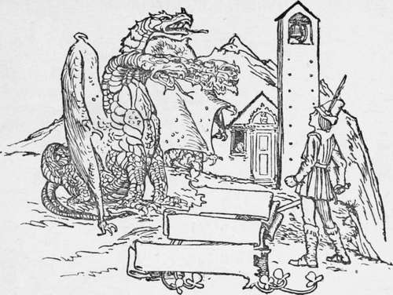

The Two Brothers
Description
This section is from the book "Household Tales by Brothers Grimm", by Brothers Grimm. Also available from Amazon: Household Tales by Brothers Grimm.
The Two Brothers
Once upon a time there were two brothers, the one rich and the other poor. The rich brother was a goldsmith, and a wicked man at heart; the poor one supported himself by broom-making, and was good and upright.
The poor brother had two children, twin boys, as like one another as two peas. These children ran backwards and forwards between their home and their rich uncle's house, and were often fed on the scraps from his table. It happened that, one day, the poor man having gone into the wood to gather brushwood, saw a bird, all of gold, and more beautiful than any he had ever seen before. He threw a small stone at it and hit it, but only one gold feather fell to the ground, and the bird flew away. He picked up the feather and took it to his brother, who examined it well, and then said "It is pure gold," and gave him a large sum of money for it.
The next morning, the same bird flew past him, as he was cutting off some of the upper branches of a birch-tree, and making further search, he came upon a nest in which lay a golden egg. He carried home the egg and showed it to his brother, who again said, "It is pure gold," and gave him its worth in money. Presently the goldsmith said, " I should very much like to have the bird itself." So the poor man went again to the wood, and this time he saw the bird sitting on the tree. He threw a stone at it, and the bird fell. He picked it up and took it to his brother, who gave him a large heap of money for it, and he returned home rejoicing. " I shall get on a bit now," thought the poor broom-maker.
The goldsmith, as will be seen, was clever and crafty, and he knew quite well what sort of a bird it was of which he had gained possession. He called his wife and said to her, " Roast this bird for me, and see that no part of it is lost; when it is ready I wish to eat it quite alone." For the bird was no ordinary bird, but of such a wonderful kind, that anyone who had eaten its heart and liver, found a gold piece every morning under his pillow. The wife prepared the bird and put it on the spit to roast. Now it happened that while the bird was still before the fire, and the wife was absent from the kitchen looking after other work, the two poor broom-maker's children ran in. They went up to the hearth and began turning the spit; just then two small pieces fell from the bird into the dripping-pan. " Let us eat those two bits," said one of them, "I am so hungry, and nobody will miss them," and so the children ate them. At that moment the wife returned, and seeing that they were eating something, asked them what it was.
"Only two little bits that fell into the pan," they answered. "They must have been the heart and the liver," exclaimed the affrighted wife, and lest her husband should miss any part of the bird and be angry, she immediately killed a chicken, took out its heart and liver, and placed them with the bird.
When it was roasted, she took it up to her husband, who ate every bit of it himself, without leaving a scrap over. The next morning, however, when he put his hand under the pillow, expecting to pull out a gold piece, no money was to be found more than on other mornings.
The two children, meanwhile, were little aware of the good luck that had befallen them. As they were getting out of bed the following morning, something fell with a jingle on to the floor. They looked to see what it was, and there lay two gold pieces. They picked them up and ran to their father, who was very much puzzled, and said, "How can this have happened?" When, however, they continued to find the same thing every morning, he went and confided the matter to his brother. The goldsmith guessed at once what must have happened; he knew that the children had somehow eaten the heart and liver of the gold bird, and being an envious and cruel hearted man, he revenged himself by saying to their father, " Your children are in league with the evil one, do not touch the gold, and do not suffer them to remain in the house ; for he has some power over them and may perhaps bring you also to ruin." The father was afraid of the evil one, and grieved as he was to do it, he led the twins into the wood and left them there, sorrowing the while at heart.
The two children ran about the wood trying to find their way home, but they took the wrong turnings and only strayed farther and farther away from the right path.
At last they met a huntsman who asked, " To whom do you two children belong ? "
"We are the poor broom-maker's boys," they answered, and then proceeded to tell him how their father would not keep them at home any longer, because they found a gold piece every morning under their pillows.
"Well," said the huntsman, "that is not such a bad thing after all, provided you use the money honestly, and do not grow lazy," and as he had no children of his own, and had taken a fancy to these two, the good man took them home with him, telling them that he would be a father to them and bring them up.
So he taught them how to become excellent huntsmen, and saved up the money which they always found on rising, that it might be ready for them in case of need.
When they were both grown up, their foster-father took them with him one day into the wood, and said, "To-day you are both to make your trial shot, for since you are now fully trained huntsmen, I can then release you from your apprenticeship."
They started together in search of game, but could find nothing to shoot. At last the huntsman looked up and saw a flock of wild geese flying overhead in the shape of a triangle, so he said to one of the youths, "Shoot me down one from each corner." The boy did so, and thus successfully stood the required test.
A few minutes later another flock of geese passed overhead in the shape of the figure two. The huntsman gave the same order to the other brother, and he also brought down a bird from each corner, and so safely made his trial shot.
Continue to:
Tags
fairy tales, children's stories, brothers grimm, household tales